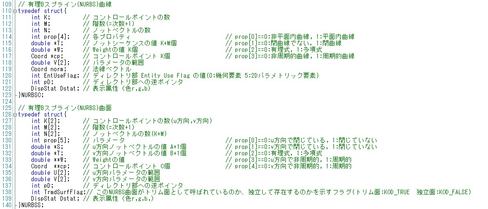
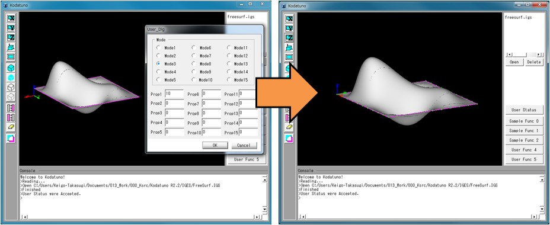
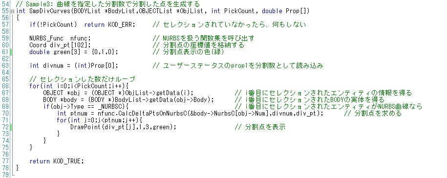
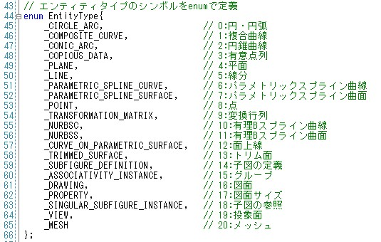

|
|
|
Prev
Index
Next |
(Ex. 3) NURBS曲線を指定した分割数で分割した点を生成する
NURBS曲線や曲面はパラメトリック曲線/曲面と呼ばれ，三次元空間上の位置はパラメータ変数によって定義されています． 簡単に言えば，x, y, zを媒介変数(パラメータ)を用いて表現しているということになります． NURBS曲線の場合はパラメータは1つ，NURBS曲面の場合はパラメータは2つあり，パラメータの値が決まれば，3次元座標値も一意に決まります．
KodatunoにおけるNURBS曲線/曲面の表現は"BODY.h"の構造体NURBSCとNURBSSによって定義されています． これらの変数を全て理解するには，NURBSに関する専門書とIGES規格書を読まなければなりませんが， Kodatunoモジュールを使う場合は，これら変数はできる限り隠蔽していますので，特に気にする必要はないと思います．
では，"SampleFunc1.cpp"のSmpDivCurves()を実行してみましょう．＜実行手順＞
- Kodatunoアプリケーションを起動し, 適当なIGESデータを1つ読み込みます．
- 表示されたBodyからエッジをピックします．ピックするエッジの数は何本でもかまいません．
- "User Status"からMode3を選択し，Prop1に分割数を入力します．
- "Sample Func 1"ボタンを押します．
- 選択したエッジ上に等間隔に分割点が生成されたことを確認してください．

＜ソース解説＞
(Ex. 1)で解説したように，"Sample Func 1"をクリックしたので，"UserFunc.cpp"の77行目ExecSampleFunc1()が実行され， さらにMode3を選択したことから，UserStat.Modeには2が代入されているので，SmpDivCurves()が実行されます．
では，SmpDivCurves()を見てみましょう． 最初の行(57行目)には，先ほどと同様，ポカよけ処理としてピック数による例外処理が記述されています．
つづいて59行目では，NURBSを扱うクラスである"NURBS_Func"クラスを呼び出しています．"NURBS_Func"クラスは"NURBS_Func.cpp/.h"に定義されています． 60行目では，三次元座標を扱うCoordの変数div_pt配列を宣言しています．算出した分割点の格納用です．61行目は分割点を表示するための色を指定しています． 色はRGB値を0-1の範囲で指定します．
今回の例題では，"User Status"のProp1に値を設定しました．Porpの値は引数のProp配列に格納されており，Prop1はProp[0]です． 引数ではdouble型ですので，必要に応じてキャストしてください．
66行目以降より，ピックしたエッジの数だけ分割点を求めていきます．67, 68行目はEx. 2で解説したように，i番目にピックしたオブジェクト情報の取り出しと， そのピックしたオブジェクトが属するBodyの実体の取り出しを行っています．今回，NURBS曲線を取り扱う必要があるため，以降の処理でピックしたオブジェクトが 本当にNURBS曲線であるかを判別する必要があります．69行目ではその判別を行っています．ここで"_NURBSC"と記述されたシンボルは，"BODY.h"内に21個定義されており， i番目にピックしたオブジェクトがどの種類であるかをこのような形で判別します． ただし，KodatunoではNURBS表現のみを扱っていますので，21個のシンボルは定義されていても， 実際に用いるシンボルは10:_NURBSC, 11:_NURBSS, 13:_TRIMMED_SURFACEの3つの場合がほとんどです．
NURBS曲線であることが確認できたならば，ようやく70行目にて分割点群の算出を行います．NURBS曲線の分割点群を求めるには，NURBS_Func::CalcDeltaPtsOnNurbsC() 関数を使います．この関数の引数等の説明は第3章の関数ライブラリリファレンスを参照していただければよいのですが，第1引数に関してはここで説明を加えておきます． この第1引数には，分割点を生成するためのNURBS曲線へのポインタを指定しなければなりません．68行目でBodyの実体は取得できており， ピックしたNURBS曲線のインデックス番号はOBJECT構造体の変数Numに格納されていますので，Body->NurbsC[obj->Num]とすることで， 現在注目中のNURBS曲線を取り出すことができます．
最後に，得られた分割点群は，72行目でその点の数だけ描画しています．この描画関数DorwPoint()は"StdAfx.h"でグローバル関数として定義されています．
以上で(Ex. 3)の解説を終了します．次はNURBS曲面に対する取り扱いについて解説します．
| Copyright(C) Kodatuno Development Team, 2011 | Last modified: Nov. 11, 2011 |